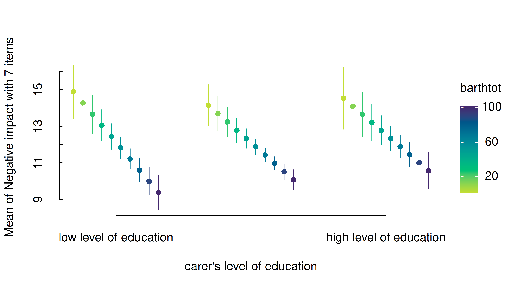
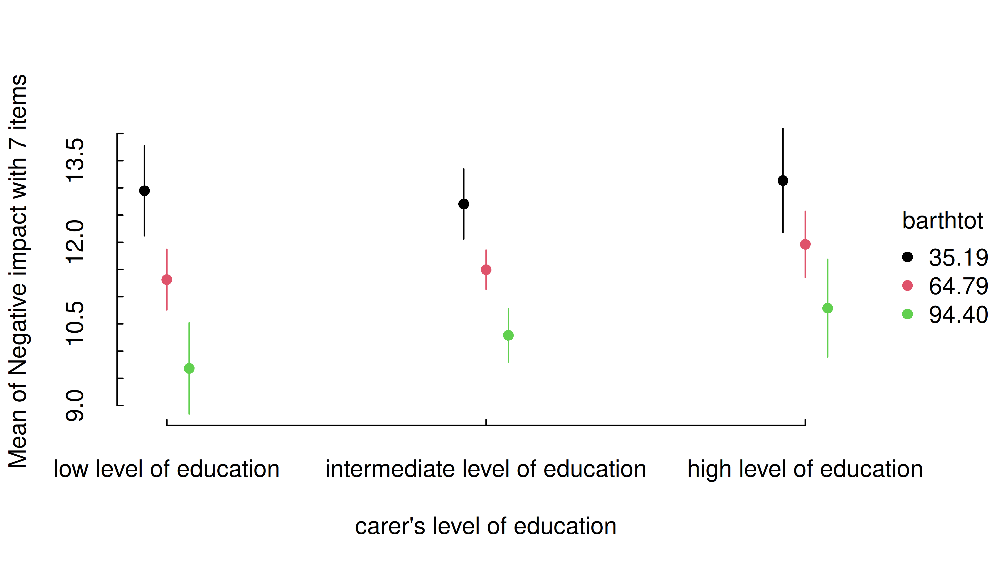
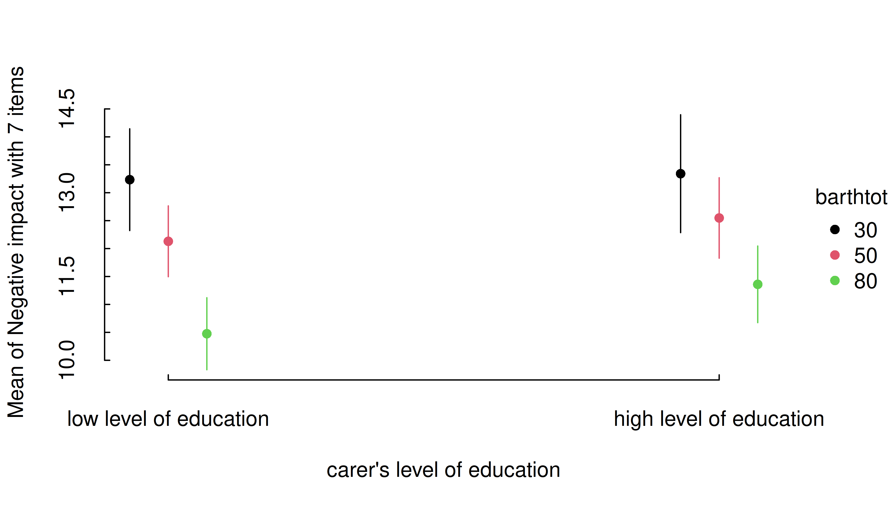
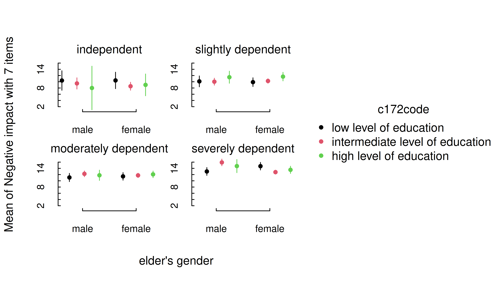
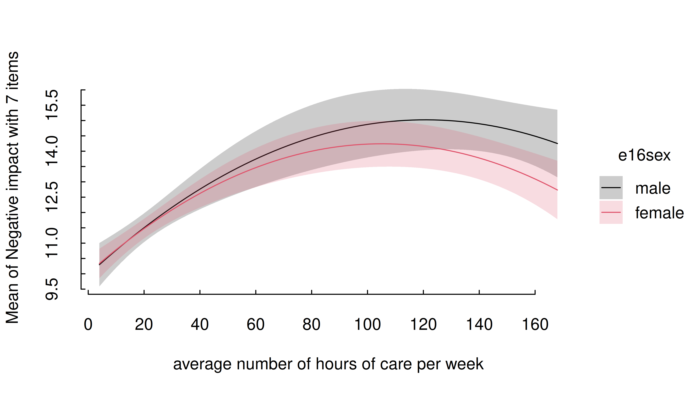

Plotting estimated marginal means with tinyplot
Source:vignettes/plotting_tinyplot.Rmd
plotting_tinyplot.RmdThis vignette provides a quick overview with different examples that
show how to plot estimated marginal means, like in
this vignette, however, here we use the {tinyplot}
package instead of ggplot2 to create the plots.
One predictor - categorical
The simplest case is possibly plotting one categorical predictor. Predicted values for each level and its confidence intervals are shown.
library(modelbased)
library(tinyplot)
data(efc, package = "modelbased")
efc <- datawizard::to_factor(efc, c("e16sex", "c172code", "e42dep"))
m <- lm(neg_c_7 ~ e16sex + c172code + barthtot, data = efc)
estimate_means(m, "c172code") |> plt()
One predictor - numeric
For numeric predictors, the range of predictions at different values of the focal predictor are plotted, the uncertainty is displayed as confidence band.
estimate_means(m, "barthtot") |> plt()
Two predictors - categorical
For two categorical predictors, the first focal predictors is plotted along the x-axis, while the levels of the second predictor are mapped to different colors.
m <- lm(neg_c_7 ~ e16sex * c172code + e42dep, data = efc)
estimate_means(m, c("e16sex", "c172code")) |> plt()
Two predictors - numeric * categorical
For two predictors, where the first is numeric and the second categorical, range of predictions including confidence bands are shown, with the different levels of the second (categorical) predictor mapped to colors again.
m <- lm(neg_c_7 ~ barthtot * c172code + e42dep, data = efc)
estimate_means(m, c("barthtot", "c172code")) |> plt()
In general, plots can be further modified using functions or arguments from the tinyplot package. Thereby, other themes, color scales, faceting and so on, can be applied.
estimate_means(m, c("barthtot", "c172code")) |>
plt(facet = ~c172code)
estimate_means(m, c("barthtot", "c172code")) |>
plt(palette = "okabe")Two predictors - categorical * numeric
If the numeric predictor is the second focal term, its values are still mapped to colors, however, by default to a continuous (gradient) scale, because a range of representative values for that numeric predictor is used by default.
Focal predictors specified in estimate_means() are
passed to insight::get_datagrid(). If not specified
otherwise, representative values for numeric predictors are evenly
distributed from the minimum to the maximum, with a total number of
length values covering that range.
I.e., by default, arguments range = "range" and
length = 10 in insight::get_datagrid(), and
thus for numeric predictors, a range of length values
is used to estimate predictions.
# by default, `range = "range"` and `length = 10`
estimate_means(m, c("c172code", "barthtot")) |> plt()
That means that the length argument can be used to
control how many values (lines) for the numeric predictors are
chosen.
estimate_means(m, c("c172code", "barthtot"), length = 20) |> plt()
Another option would be to use range = "grid", in which
case the mean and +/- one standard deviation around the mean are chosen
as representative values for numeric predictors.
estimate_means(m, c("c172code", "barthtot"), range = "grid") |> plt()
It is also possible to specify representative values, at which the
estimated marginal means of the outcome should be plotted. Again,
consult the documentation at ?insight::get_datagrid for
further details.
estimate_means(
m,
c(
"c172code = c('low level of education', 'high level of education')",
"barthtot = c(30, 50, 80)"
)
) |> plt()
estimate_means(m, c("c172code", "barthtot = [fivenum]")) |> plt()Three numeric predictors
The default plot-setting for three numeric predictors can be rather confusing.
m <- lm(neg_c_7 ~ c12hour * barthtot * c160age, data = efc)
estimate_means(m, c("c12hour", "barthtot", "c160age")) |> plt()
Instead, it is recommended to use length, create a
“reference grid”, or again specify meaningful values directly in the
by argument.
estimate_means(m, c("c12hour", "barthtot", "c160age"), length = 2) |> plt()
estimate_means(m, c("c12hour", "barthtot", "c160age"), range = "grid") |> plt()Three categorical predictors
Multiple categorical predictors are usually less problematic, since discrete color scales and faceting are used to distinguish between factor levels.
m <- lm(neg_c_7 ~ e16sex * c172code * e42dep, data = efc)
estimate_means(m, c("e16sex", "c172code", "e42dep")) |> plt()
Smooth plots
Remember that by default a range of ten values is chosen for numeric focal predictors. While this mostly works well for plotting linear relationships, plots may look less smooth for certain models that involve quadratic or cubic terms, or splines, or for instance if you have GAMs.
m <- lm(neg_c_7 ~ e16sex * c12hour + e16sex * I(c12hour^2), data = efc)
estimate_means(m, c("c12hour", "e16sex")) |> plt()
In this case, simply increase the number of representative values by
setting length to a higher number.
estimate_means(m, c("c12hour", "e16sex"), length = 200) |> plt()